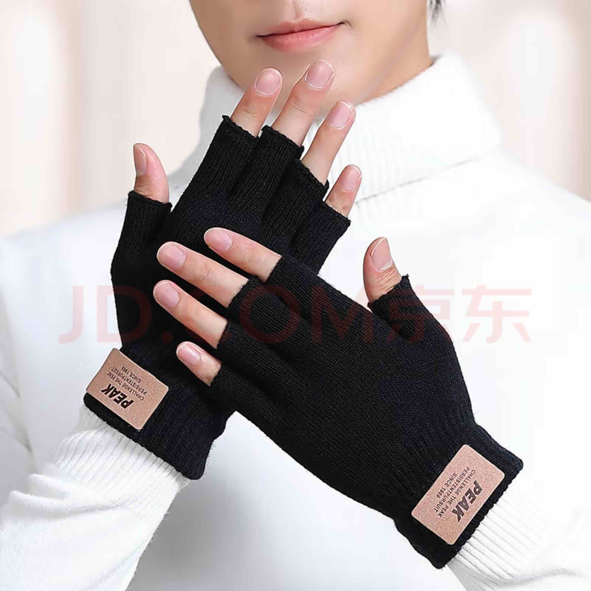
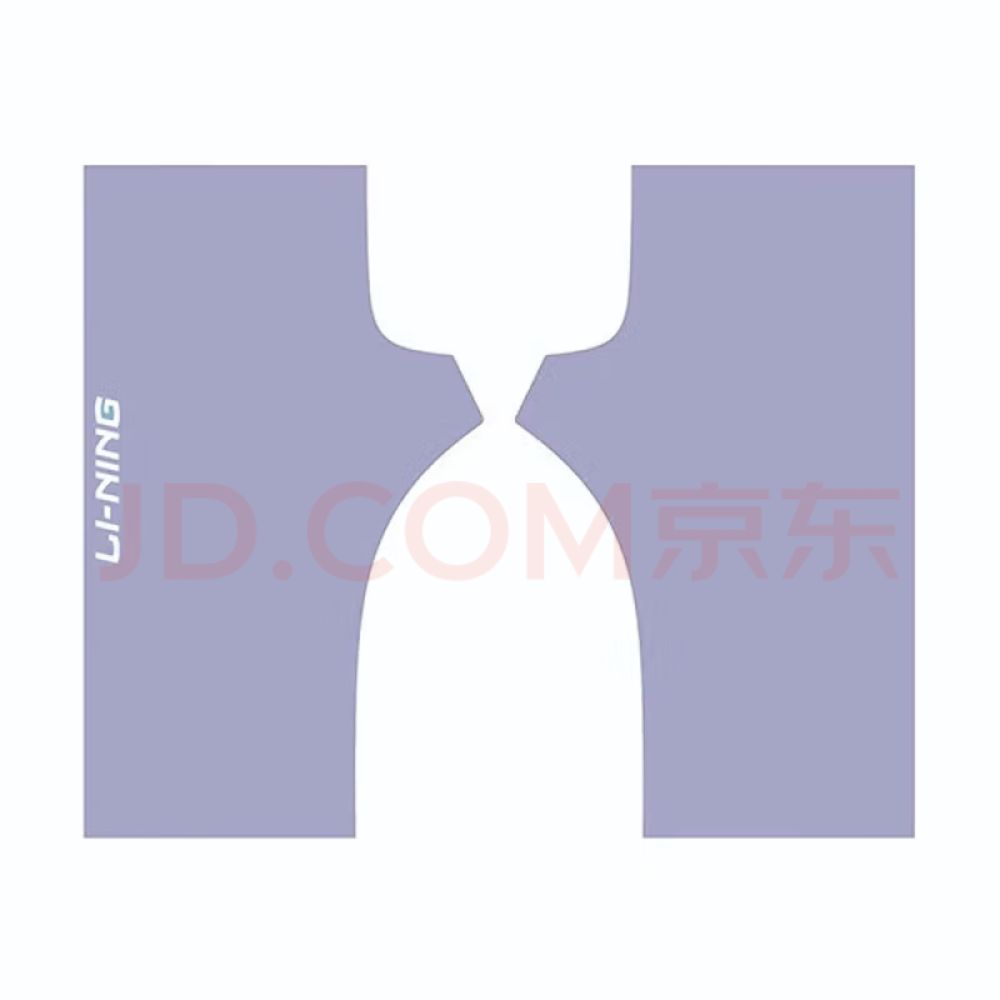

सही विंटर ग्लव्स ढूंढना | मूल, AI द्वारा अनुवादित
कंप्यूटर काम के लिए सही सर्दियों के दस्ताने ढूंढना थोड़ा मुश्किल रहा है। शुरुआत में, मैंने दो-उंगली वाले दस्ताने आज़माए, लेकिन वे व्यावहारिक नहीं थे। Mac टचपैड को स्क्रॉल करने के लिए अंगूठे और तर्जनी के साथ मध्यमा उंगली का उपयोग करने की आवश्यकता होती है, जो दो-उंगली डिज़ाइन के साथ संभव नहीं था। इसके बाद, मैंने पांच-उंगली वाले दस्ताने आज़माए। हालांकि वे बेहतर निपुणता प्रदान करते थे, लेकिन वे आरामदायक टाइपिंग के लिए बहुत भारी थे।
मैंने अब एक स्लीव-स्टाइल के दस्ताने का ऑर्डर दिया है और उम्मीद करता हूं कि ये गर्मी और कार्यक्षमता का बेहतर संतुलन प्रदान करेंगे।

स्रोत: jd.com

स्रोत: jd.com
लगभग एक घंटे तक इनका उपयोग करने के बाद, मुझे लगता है कि ये अच्छी तरह से काम करते हैं। वास्तव में, मैं एक और जोड़ी खरीदने की योजना बना रहा हूँ। ये दस्ताने “साइक्लिंग हाफ-फिंगर ग्लव्स” के रूप में बाजार में उपलब्ध हैं, और मेरा मानना है कि ये पूरी सर्दियों के मौसम के लिए एकदम सही होंगे। दो जोड़ी होने से मैं इन्हें धोकर और बारी-बारी से उपयोग कर सकूंगा।